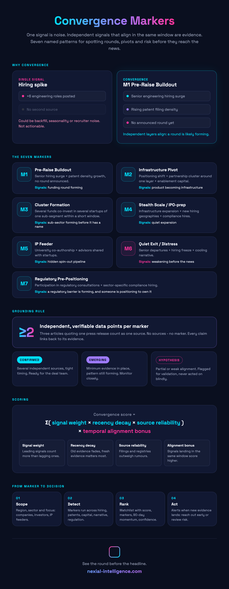

By the time a funding round appears in a press release or a deal database, the opportunity is already priced in. Every fund with a subscription sees the same entry on the same morning. The teams that win the allocation usually knew earlier, not because they had secret data, but because they read the signals that come before an announcement and knew which combinations actually mean something.
The problem is that a single signal almost never means anything on its own. A hiring spike can be backfill. A patent filing can be a defensive move. A burst of media coverage can be a PR campaign. This article explains how convergence markers solve that problem: named patterns that only fire when independent signals from different layers line up in the same time window, and only when each signal can be traced back to a verifiable source.
Key Takeaways
- Single signals produce false positives. Reliable early detection comes from independent signals that converge in the same window.
- A convergence marker is a named, repeatable pattern that maps a specific combination of signals to a specific outcome, such as a forming round or a quiet exit.
- Seven markers cover the main deal and risk scenarios: Pre-Raise Buildout, Infrastructure Pivot, Cluster Formation, Stealth Scale, IP Feeder, Quiet Exit and Regulatory Pre-Positioning.
- The grounding rule keeps the output honest: at least two verifiable, independent data points per marker, and a clear confidence level on every result.
- A convergence score weighs leading signals above lagging ones and rewards signals that land close together in time.
Why Single Signals Mislead
Most "early signal" tools track one data stream at a time: job postings, patent filings, web traffic or news mentions. Each of these streams is useful, and each of them is noisy. Taken alone, they generate long lists of alerts that analysts quickly learn to ignore.
- Hiring: a jump in open roles can mean growth, but it can also mean churn, seasonal hiring or a recruiter reposting the same position.
- Patents: a new filing can signal a product direction, or simply a company protecting work it finished years ago.
- Narrative: a spike in coverage can reflect real momentum, or a paid campaign ahead of a conference.
- Web activity: traffic and new pages move for dozens of reasons unrelated to strategy.
The Independence Test
The fix is not more data from the same stream. It is evidence from different streams that point in the same direction. Independence matters: three articles that quote one press release are one data point, not three. A senior engineering hire confirmed on a professional profile, a patent application in a public registry and an absence of any announced round are three independent observations. When they line up, the probability that something real is happening rises sharply.
What Is a Convergence Marker
A convergence marker is a named pattern of two or more independent signals, drawn from different signal layers, that appear within a defined time window and point to a specific outcome. The layers we work with are Markets & Capital, Technology & IP, Narratives & Reputation, and Growth & Execution.
Naming the pattern is important. A named marker is repeatable: the same logic runs across every sector and every region. It is auditable: anyone can see which signals triggered it. And it is comparable: an analyst can rank a hundred companies by the same criteria instead of reading a hundred unrelated alerts. Instead of "something changed at this company", the output becomes "this company matches the Pre-Raise Buildout pattern, and here is the evidence".
The Seven Convergence Markers
Each marker below lists the signal combination it looks for and what that combination usually precedes. Six of them describe opportunities. One of them describes risk, which matters just as much for anyone monitoring a portfolio.
M1Pre-Raise Buildout
Signals: a surge in senior engineering hiring together with rising patent filing density, while no new round has been announced. What it suggests: the company is building ahead of a raise. This is the marker most directly tied to deal sourcing, and the lead window we design it for is roughly four to eight months before an announcement.
M2Infrastructure Pivot
Signals: a shift in product positioning, a cluster of new partnerships around one technical layer, and enablement capital from strategic investors. What it suggests: a product is turning into infrastructure that others build on, which changes both its valuation logic and its likely acquirers.
M3Cluster Formation
Signals: several funds co-investing in several startups of the same sub-segment within a short window. What it suggests: a new sub-sector is forming before analysts or media have given it a name. Seeing the cluster early is often more valuable than spotting any single company inside it.
M4Stealth Scale / IPO-prep
Signals: expansion of infrastructure, hiring in new geographies and a wave of compliance and finance hires. What it suggests: quiet expansion, sometimes preparation for a listing or a large strategic transaction, well before it is discussed publicly.
M5IP Feeder
Signals: research co-authorship between a university group and industry, combined with advisors shared with early-stage startups. What it suggests: a hidden spin-out pipeline. These links often reveal where the next wave of technical founders will come from.
M6Quiet Exit / Distress
Signals: departures of senior leaders, a hiring freeze and a cooling narrative. What it suggests: a company is weakening before the news reports it. For investors this is an early warning on a portfolio company; for acquirers it can be the first sign of a distressed opportunity.
M7Regulatory Pre-Positioning
Signals: participation in regulatory consultations together with sector-specific compliance hiring. What it suggests: a regulatory barrier is forming, and some players are positioning to benefit from it. These companies often become the default partners or targets once the rules are in force.

The Grounding Rule and Confidence Levels
Pattern detection is only useful if it can be trusted. That is why every marker follows one strict rule: a marker is shown only when it is supported by at least two verifiable, independent data points. No sources, no marker. Each signal behind a marker links back to the place it was observed, so an analyst can check the evidence in minutes instead of rebuilding the research from scratch.
On top of the grounding rule, every result carries a confidence level:
- CONFIRMED: several independent sources with tight timing. The pattern is clear enough to bring to a deal team or an investment committee.
- EMERGING: the minimum evidence is in place, but the pattern is still forming. Worth monitoring closely and revisiting as new signals arrive.
- HYPOTHESIS: partial or weak alignment. Flagged so it is not missed, but never acted on without further validation.
Why This Matters for AI-Driven Research
General-purpose AI assistants are good at writing fluent summaries and bad at telling you when they are guessing. In deal work, a confident but invented fact is worse than no answer at all. In a grounded system, the language model only explains facts that already exist in the signal graph. It does not search for new claims and it does not fill gaps with plausible text. Every statement in a briefing can be traced to evidence, and the confidence level tells the reader how much weight to give it.
How Convergence Is Scored
Markers tell you which pattern a company matches. The convergence score tells you how strongly. It combines four factors:
- Signal weight: leading signals, such as senior hires or new patent families, count more than lagging ones, such as announced revenue milestones.
- Recency decay: evidence loses weight as it ages, so a signal from last month matters more than one from last year.
- Source reliability: official filings and registries outweigh unverified mentions and rumours.
- Temporal alignment bonus: signals that land close together in time score higher than the same signals spread over years, because alignment is what turns noise into a pattern.
The result is a ranking that rewards exactly what early detection needs: fresh, reliable, independent evidence that converges.
From Marker to Watchlist
Markers become useful when they feed a working process rather than a one-off report. A typical workflow looks like this:
- Scope: define the region, the sector and the focus, for example private companies, investors and co-investment networks, universities as IP feeders, or corporates and CVCs.
- Detect: run the relevant markers across hiring and org data, patents and research, funding and capital, narrative and forums, and regulatory sources.
- Rank: maintain a watchlist with the convergence score, the matched markers, 90-day momentum and the confidence level for each entity.
- Act: receive an alert when new evidence lands, and move early: start a conversation before a round, or open a risk review before a problem becomes public.
Illustrative scenario, not a real company
A climate-tech startup that has not raised in two years posts three senior engineering roles in a new city and files two patent applications in one quarter. Two independent layers align and no round is announced: the company enters the watchlist as M1, EMERGING. Six weeks later, a partner from a growth fund joins as a board advisor. A third independent signal lands inside the same window, the score rises and the status moves to CONFIRMED. The deal team now has a reason to call, and the evidence to explain why.
Seeing the Round Before the Headline
Early detection is not about collecting more alerts. It is about filtering for the few combinations of signals that reliably come before a deal, a pivot or a problem, and being honest about how certain each conclusion is. Convergence markers turn scattered observations into named, evidence-backed patterns that a deal team can rank, check and act on.
For sensitive mandates, the same logic can run inside a private cloud or on-premises environment, so watchlists and target lists never leave your perimeter. You can also read how we approach sector mapping and landscape analysis and on-premises strategic intelligence.
See convergence markers on a real sector
Configure a sample landscape in about two minutes, or scope a 2-4 week pilot on your own sectors and markers.